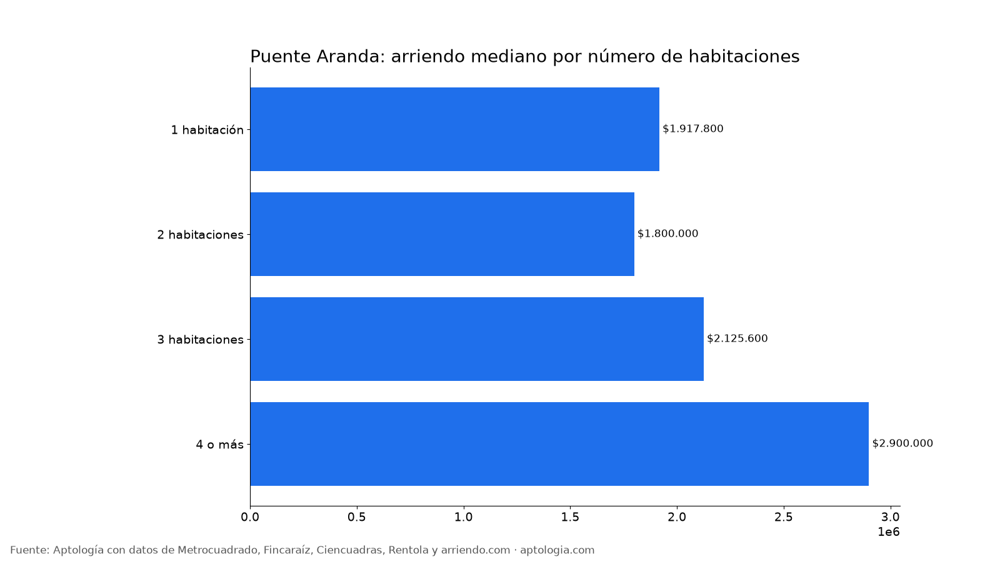
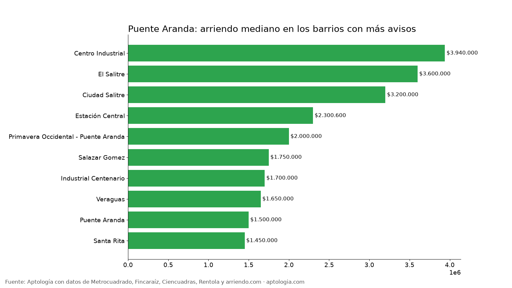

Arriendo en Puente Aranda, Bogotá: precios por habitaciones, estrato y barrio (octubre 2026)
Estudio con datos abiertos (CC BY 4.0). Versión original: https://www.aptologia.com/estudios/arriendo-en-puente-aranda-bogota-2026 · DOI: 10.5281/zenodo.23349027
El arriendo mediano de un apartamento o apartaestudio en Puente Aranda (Bogotá) es de $1.900.000 al mes, unos $42.472 por m². Un 2 habitaciones cuesta en la mediana $1.800.000. El barrio más barato con 5 avisos o más es Santa Rita ($1.450.000) y el más caro Centro Industrial ($3.940.000).
Resumen: analizamos 228 apartamentos y apartaestudios en arriendo únicos en la localidad de Puente Aranda.
Actualizado: 13 de octubre de 2026 · Próxima actualización: mensual.

Resumen
| Indicador | Valor |
|---|---|
| Canon mediano | $1.900.000 |
| Por m² (mediana) | $42.472/m² |
| Área mediana | 48 m² |
| Con parqueadero | 21,9 % |
| Administración mediana | $217.800 (11,4 % del canon) |
| Avisos únicos | 228 |
Por número de habitaciones
| Habitaciones | Canon mediano | Por m² | Área mediana | Avisos |
|---|---|---|---|---|
| 1 habitación | $1.917.800 | $57.692/m² | 35 m² | 33 |
| 2 habitaciones | $1.800.000 | $38.158/m² | 50 m² | 111 |
| 3 habitaciones | $2.125.600 | $28.040/m² | 77 m² | 44 |
| 4 o más | $2.900.000 | $31.875/m² | 89 m² | 6 |
Por estrato
| Estrato | Canon mediano | Por m² | Avisos |
|---|---|---|---|
| 3 | $1.650.000 | $35.714/m² | 147 |
| 4 | $3.200.000 | $71.111/m² | 69 |
| 5 | $3.277.000 | $45.455/m² | 7 |
Barrios más baratos y más caros

Más baratos:
| Barrio | Canon mediano | Por m² | Avisos |
|---|---|---|---|
| Santa Rita | $1.450.000 | $29.167 | 6 |
| Puente Aranda | $1.500.000 | $41.000 | 5 |
| Veraguas | $1.650.000 | $43.421 | 5 |
| Industrial Centenario | $1.700.000 | $50.000 | 21 |
| Salazar Gomez | $1.750.000 | $43.618 | 12 |
Más caros:
| Barrio | Canon mediano | Por m² | Avisos |
|---|---|---|---|
| Centro Industrial | $3.940.000 | $93.198 | 6 |
| El Salitre | $3.600.000 | $60.000 | 5 |
| Ciudad Salitre | $3.200.000 | $73.333 | 41 |
| Estación Central | $2.300.600 | $65.731 | 5 |
| Primavera Occidental - Puente Aranda | $2.000.000 | $28.571 | 7 |
Apartaestudio o apartamento de 1 habitación
En Puente Aranda, un apartaestudio cuesta en la mediana $2.208.000 (32 avisos) y un apartamento de 1 habitación $1.917.800 (33 avisos): $290.200 de diferencia.
Cómo usarlo para decidir: compara tu presupuesto con la mediana de tu número de habitaciones y mira los barrios más baratos de la tabla; suma la administración (mediana $217.800) para saber el costo real mensual.
Preguntas frecuentes
¿Cuánto cuesta arrendar un apartamento en Puente Aranda? La mediana es $1.900.000 al mes, con 228 avisos únicos al 13 de octubre de 2026.
¿Cuánto vale un apartamento de 2 habitaciones en arriendo en Puente Aranda? La mediana es $1.800.000 al mes (111 avisos).
¿Cuál es el barrio más barato para arrendar en Puente Aranda? Entre los barrios con 5 avisos o más, Santa Rita, con un canon mediano de $1.450.000. El más caro es Centro Industrial, con $3.940.000.
¿Cuánto se paga de administración en Puente Aranda? La mediana es $217.800 al mes, alrededor del 11,4 % del canon.
¿Qué porcentaje de apartamentos en arriendo en Puente Aranda tiene parqueadero? El 21,9 % de los avisos que informan el dato incluye al menos un parqueadero.
Metodología
- Fuente: base de ingesta diaria de Aptología, con avisos públicos de Metrocuadrado, Fincaraíz, Ciencuadras, Rentola y arriendo.com. Corte al 13 de octubre de 2026.
- Filtros: apartamentos y apartaestudios en avisos vivos que pasan el control de calidad, en la localidad de Puente Aranda, canon entre $400.000 y $30.000.000. Se excluyen TikTok y Facebook Marketplace.
- Duplicados: se deja un aviso por grupo de duplicados (el mismo inmueble en varios portales).
- Barrios: solo barrios con 5 avisos o más. Parqueadero y administración, sobre los avisos que informan el dato.
- Limitaciones: son precios pedidos, no cerrados. Los barrios y localidades vienen tal como los escribe cada portal.
- Datos abiertos: datos.csv, licencia CC BY 4.0.
Cómo citar
Pinzón Pineda, D. M. (2026). Arriendo en Puente Aranda, Bogotá: precios por habitaciones, estrato y barrio (octubre 2026). Aptología. https://www.aptologia.com/estudios/arriendo-en-puente-aranda-bogota-2026. Datos: datos.csv, licencia CC BY 4.0.